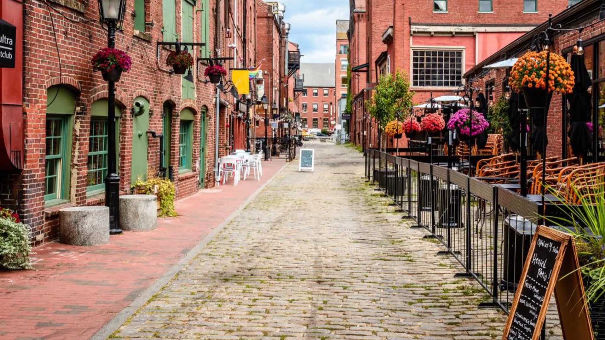

From Boston
Under 2 hours by car on I-95 North. Amtrak's Downeaster runs Boston to Portland daily — no driving, no parking stress. Book a party bus for the group and the trip becomes part of the celebration.

Portland, Maine
Where to stay, eat, drink, and what to do for the perfect Maine bachelorette weekend — including getting there from Boston, NYC, and beyond.
Why Portland
Nashville is crowded. Scottsdale is hot. Portland, Maine is the answer nobody talks about — which is exactly why it's so good right now.
The city is compact enough to walk everywhere, has a world-class food and bar scene, and sits at the edge of one of the most beautiful coastlines on the East Coast. Add a private boat charter on Casco Bay and you have a bachelorette weekend that feels genuinely special — not like a tourist package.
And for groups coming from the Northeast, the logistics are easy. Portland is just under 2 hours from Boston, 5 hours from New York, and 3.5 hours from Providence and Hartford.
Getting There
Under 2 hours by car on I-95 North. Amtrak's Downeaster runs Boston to Portland daily — no driving, no parking stress. Book a party bus for the group and the trip becomes part of the celebration.
About 5 hours by car or the Downeaster with a connection in Boston. Consider flying into Portland International Jetport (PWM) — direct flights from NYC area airports run frequently and cut travel time dramatically.
3.5–4 hours by car up I-95. A straight shot with no major city traffic to navigate. Easy Saturday morning departure, back Sunday evening.
Portland International Jetport (PWM) is a small, easy airport with direct flights from NYC (JFK/LGA/EWR), Philadelphia, Washington DC, Chicago, and Charlotte. No hustle of a major hub.
Where to Stay
Portland's hotel scene punches above its weight. These are the best picks for bachelorette groups.
Best Location
Staying in the Old Port puts you walking distance from the best bars, restaurants, and the boat charter departure at 320 Fore Street. Look at The Francis, The Press Hotel, and Canopy by Hilton.
Best for Groups
For larger groups (8+), renting a whole house near the water gives you space to get ready together, store gear, and enjoy the morning before heading downtown. Search Vrbo for Portland waterfront rentals.
Most Unique
For a truly unforgettable experience, stay on Peaks Island — a 15-minute ferry from downtown Portland. Waking up on a Casco Bay island for a bachelorette weekend is something guests never forget.
Sample Weekend
A 3-day framework you can adapt for your group. The boat cruise anchors Saturday — everything else builds around it.
Friday
Saturday
Sunday
Eat & Drink
Best for Oysters
James Beard Award-winning oyster bar on Middle Street. Brown butter lobster rolls, rotating local oysters, and a buzzy atmosphere perfect for kicking off the weekend.
Best Cocktails
Serious cocktail bar with a warm, intimate atmosphere. One of the best bars in the country. Reservations recommended on weekends.
Best Brunch
On the waterfront with views of the harbor and Casco Bay. Seafood-forward brunch menu with strong cocktails. The ideal pre-boat-cruise meal.
Best Dinner
Portland institution. Wood-fired everything in a converted warehouse with an open kitchen. One of the most celebrated restaurants in New England.